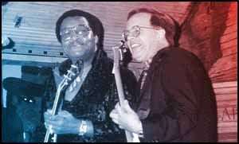

A Close Personal Friend
By Matt Hanks
MAY 4, 1998: Rotterdam, 1975 – “I flew in on KLM airlines around 11 in the morning, and when I called over to the hotel, Mick [you know, Jagger] told me they [you know, the Rolling Stones] were just going to bed. He said he’d call back around 5 or 6 that afternoon. It ended up being closer to 7 p.m. When I finally did get the call, they told me to come down to their hotel room. When I got there, one of their valet guys answered the door. He asked me to come in, and when I walked in it was just me and the boys. You could tell it was Keith’s room. All the white light bulbs had been replaced with red ones. There were these weird scarves hanging over all the lampshades, and, man, there were guitars everywhere. For a while we just sat around and listened to tapes – some Memphis stuff, some stuff they’d been working on, some stuff I’d been working on with John Entwistle and Nicky Hopkins. We listened for a while, and then we plucked around on a few guitars. Then we went to this makeshift studio they had set up in an old auditorium down the street from the hotel. Glyn Johns [you know, the Stones’ engineer] had their mobile recording unit set up in a big Mercedes truck outside – huge cables running out of it and everything. [Johns] had this primitive video system running from the auditorium to the truck, and he would just talk to us from outside through the monitors. … I didn’t know going in, but they were also auditioning Jeff Beck at the same time. I remember he came into the studio smoking a big ol’ cigar. … By the end of the session all four of us – even Mick – were playing guitar together. It was pretty cool.”
Pretty cool, indeed. Just another day in the life of “the World’s Greatest Rock-and-Roll Band,” but a day that Robert Johnson will never forget. Whether he’d like to or not. Needless to say, Johnson’s 1975 audition for the guitar spot that Mick Taylor vacated a year earlier didn’t pan out. At 23, he was probably too young to join the then-thirtysomething Stones, and he was definitely too American (the charge eventually fell to Ron Wood, who had him beat on both counts), but he sure didn’t lack for experience.
By 1975, young Robert Johnson’s life already read like the bluebook for a rock-and-roll fantasy camp. While still attending West Side High School, he became a regular session player at Stax, Sonic, and a host of other Memphis studios.
By the ripe old age of 20, he was splitting his time between Memphis and London, and his company between Isaac Hayes and Marc Bolan. He shared an apartment with Ian Anderson, trashed a hotel room with Keith Moon, and, in 1974 – among a field of 200 hopefuls – secured the lead guitar slot in John Entwistle’s band Ox.
Sure, luck had a little to do with it; Johnson found himself in the right place at the right time more often than any one person justly should. And he’ll look you square in the eye and admit that “I’ve just always had the desire to hang around certain people.”
But the kid from West Side High also had the ambition of 10 men and the chops to match. And therein lies the essence of Robert Johnson – a rare individual who tempers a fan’s zeal with a player’s composure. It’s a balance he strikes to this day, juggling music consulting (for several television documentaries, B.B. King’s Blues Club on Beale, and the Hard Rock Cafe, which features some of Johnson’s memorabilia on the walls of its Beale Street restaurant, making him the only Memphis-born guitarist represented there) and regular session work (with everyone from ZZ Top to an obscure Swedish band called Eric Von Zipper).
Living a rock-and-roll fantasy: Robert Johnson has jammed with the likes of the Rolling Stones and Little Milton (above).
Back to the ’70s. After a three-year tenure with Entwistle’s Ox, Johnson moved back home and began work on what would become his crowning solo achievement – the album Close Personal Friend. Newsweek called it “one of the late-’70s’ best, if least known, rock-and-roll records.” But Close Personal Friend – reissued just last month on EMI subsidiary label Bubblehead Records – is hardly the brand of rock you’d expect from a Stax/Stones affiliate. In the context of 1998’s splintered pop landscape, it’s easy to forget what a shock the album must have been upon initial release. There he was, a guitar player rooted in blues and soul churning out a power-pop gem worthy of a slot on the Stiff records release schedule right between Dave Edmunds and Nick Lowe. The shift was more than mere trend-spotting.
“You have to remember what was on the charts in those days [1978],” Johnson explains. “You had Saturday Night Fever, Donna Summer, Dolly Parton. There just weren’t many people in the top-100 playing rock-and-roll [maybe things haven’t changed so much after all]. The Sex Pistols came along and changed all that. They really floored me.”
Again, the fan led, and the player followed.
Johnson toured in support of Close Personal Friend, opening for the Police and the Knack, but “bad vibes and bad management,” doomed his band and album to a premature fate.
Johnson has retreated to quieter musical confines since then. He recently co-wrote a song for the upcoming Dennis Quaid Bosnian War drama Savior. And he’s enjoying the monthly royalty checks for the use of another of his songs, “The Country’s Rocking,” in the current production of Sesame Street Live. And though he recently struck out on a publicity tour for the Close Personal Friend re-release – most of these promotional efforts have been focused in Europe, where this July VH-1 will broadcast a live concert featuring Johnson and his bandmates from the album, fellow Memphians Blair Cunningham and David Cochran – Johnson seems most content pursuing his hobby of collecting and restoring old Midtown homes. But don’t be fooled; this rock-and-roll refugee can still bend your ear with the best of them.